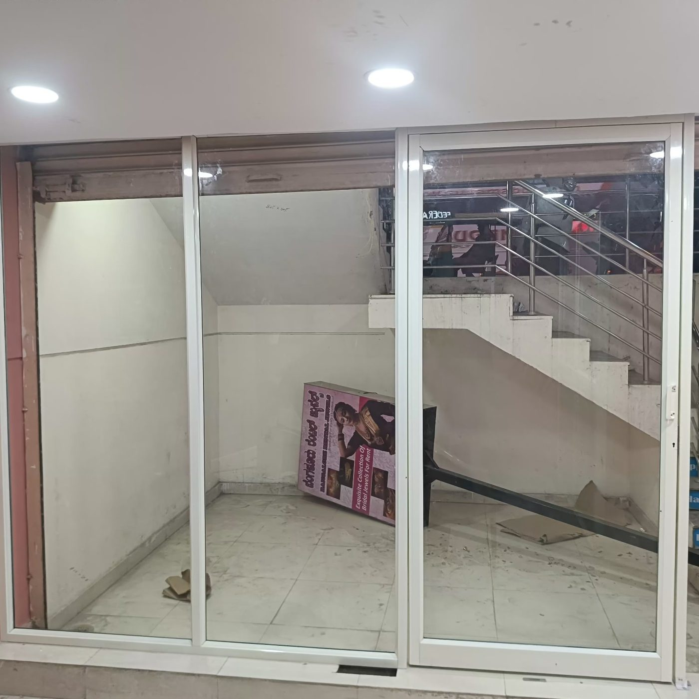
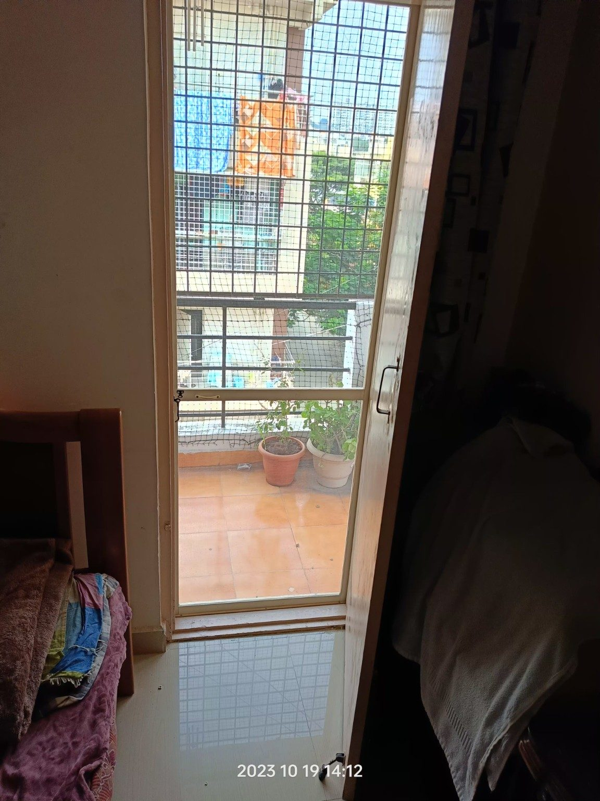
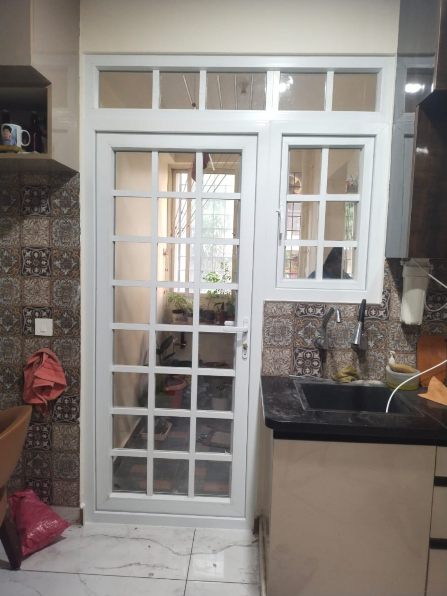
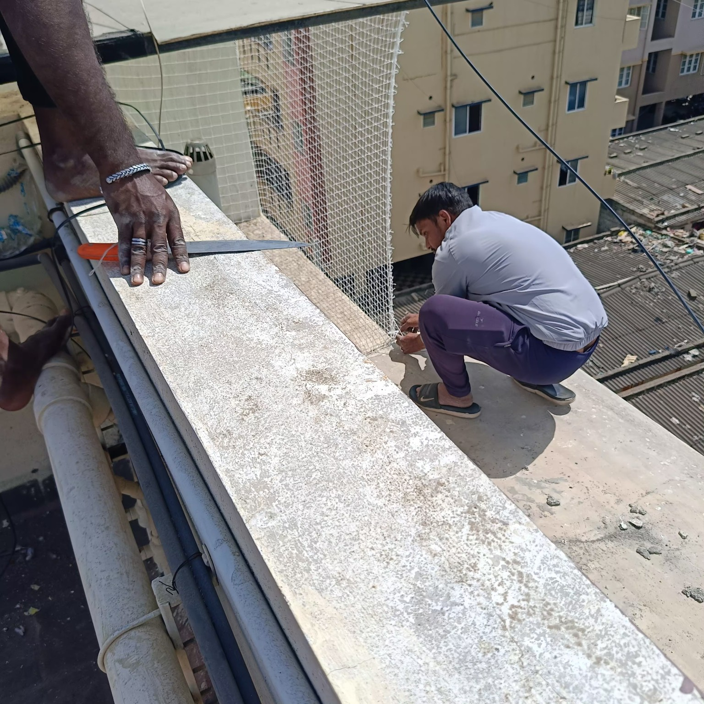

Aluminium & uPVC Window and Door Repair Services in Bangalore
Repair is our main service focus. Kutbi specialises in aluminium and uPVC window and door repair across Bangalore, including aluminium sliding windows, uPVC sliding windows and doors, rollers, wheels, tracks, handles, locks, alignment, rubber beading, glass and related hardware. We also provide aluminium window installation, uPVC window and door installation, mosquito mesh window and door installation, pigeon net installation and cloth dryer installation.
Call 9979204616WhatsApp⭐ Google Business Profile⭐ Leave Us a Google ReviewKutbi Aluminium & uPVC Window and Door Repair Services
Repair is our primary service. We also provide genuine installation services for windows, doors, mosquito mesh, pigeon nets and cloth dryers.
Aluminium Sliding Window Repair
Repair of suitable aluminium sliding windows, rollers, wheels and related hardware.
View repair serviceuPVC Sliding Window Repair
Repair of suitable uPVC sliding windows and related hardware.
View repair serviceAluminium Window Repair
View repair serviceuPVC Window Repair
View repair serviceAluminium & uPVC Door Repair
View repair serviceMosquito Mesh Repair
View repair servicePigeon Net Repair
View repair serviceCloth Dryer Repair
View repair servicesFind Kutbi on Google
View our Google Business Profile, contact details, location and customer reviews.
⭐ View Google Business Profile⭐ Read / Leave a Google Review
Kutbi project work
Examples of aluminium, uPVC and mesh-related project work.




